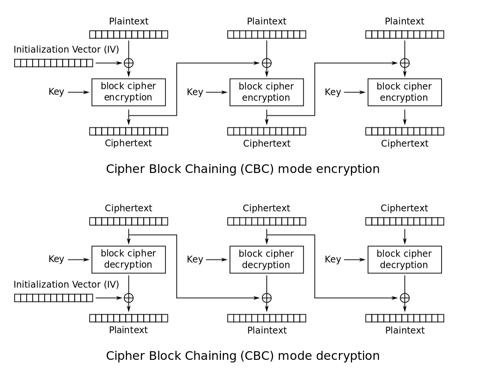

Security Project 2020
Julia Lieberman, Lindsey Pesqueira, Brandon Yup

Julia Lieberman, Lindsey Pesqueira, Brandon Yup
December 2020
The rise of eCommerce has led to the increased need for security principles and standards on web platforms. The lack of regulations and compliances allow for security vulnerabilities and threats, putting too much responsibility on the consumer to protect themselves. After an in-depth exploration of implementing the Visa checkout, it is not recommended to use Visa as an eCommerce platform due to its lack of support and unreliable Application Programming Interfaces (API). However, the unsuccessful implementation created an educational opportunity to further comprehend security concepts and principles. When developing an eCommerce platform, a merchant or vendor will likely need to pay for a service, such as Stripe or Shopify, in order to achieve the most successful and secure site. Various attacks such as Distributed Denial of Service (DDoS) and Malicious Bots are discussed, providing possible solutions to common attacks on eCommerce platforms.
eCommerce, web security, privacy, authentication, integrity, SSL/TLS, DDoS, Visa, AES, HMAC
When it comes to securing an eCommerce platform, there are five different dimensions of security that need to be ensured: privacy, authentication, integrity, non-repudiation, and availability [14].
Privacy is a prominent issue as ever-changing technology is being developed. Privacy is the ability to control secondary or additional access beyond the specified use of information from the consumer, such as unauthorized users or third parties [14]. The use of personal data brings up several concerns for intellectual property reselling, web activity correctness, integrity of the server machine, buyer’ stricking passwords (obtaining information from buyer to get access to other accounts the buyer may have), packet sniffing or snooping the victim’s computer [15]. Luckily, there are many preventions that both the consumer and eCommerce provider can take to ensure customer privacy. Since the regulations and standards of the consumer’s privacy are limited, the burden often falls to the consumer. In a perfect world the consumer would use a complicated and unique password, check authenticity, verify the URL, and avoid disclosing non-pertinent information. However, to protect the consumers, eCommerce provider should establish a documented data retention policy and fair data collection, in which the provider must explain the data being collected and the purpose for data collection [15]. As mentioned previously, the laws or regulations concerned with protecting customers’ privacy from eCommerce sites are vastly limited. However, there are some newer laws such as the California Consumer Privacy Act of 2018, in which California now requires websites to prompt the user to accept the ‘cookies’ they are collecting, to confirm the user’s consent [7]. Companies release their privacy policies to provide their customers with greater comfort and knowledge of how their personal information is being used. To provide privacy on our eCommerce site, we implemented the use of a Secure Sockets Layer (SSL), in which we will define and discuss later [19].
Authentication is much more straightforward than privacy because we can use cryptographic methods to verify identity. There are three techniques to determine a consumer’s authenticity on an eCommerce platform: something they know, something they have, or something they are [13]. eCommerce sites can authenticate users by asking them to provide data that satisfies one of three conditions. The site can authenticate the user through something they know, like a username and password. Another technique is to authenticate with something the user has, like asking for a CVV for a credit card. Lastly, the site can authenticate a user with something they are, such as facial recognition on an Apple iPhone [dark]. Many eCommerce sites will use CAPTCHA or multi-factor authentication. When using an eCommerce platform, it is necessary to verify both identities of the parties that are communicating as a form of access control. In eCommerce there are several different areas in which authenticity needs to be checked so that the data and transactions being transferred are valid. Authentication can be maintained through symmetric or asymmetric cryptographic schemes [14]. This can be accomplished through transport layer authentication (HTTP over SSL), token authentication through WS-Security specifications using Security Assertion Markup Language (SAML) assertions, or the Simple Object Access Protocol (SOAP) authentication header [19].
Integrity of a website is the trustworthiness of the information and source. A website has integrity if that information has not been altered in any way by an adversary. This is extremely important in eCommerce! For example, funds or top-secret information could be delivered to the wrong recipient if altered [14]. Digital signatures or message authentication codes are the easiest ways to guarantee integrity [19]. A hashing algorithm assures the integrity of a message because it proves that a message has not been altered. This can be done by the source sending a message, as well as a hash of the shared private key. Then the receiver can compute the hash of the shared private key and compare it to hash that they received. Since hashes have the properties of being one-way and collision resistant, it would be nearly impossible for an adversary to replicate the hash to steal the identity of the sender [6]. Integrity can be ensured on a website with SSL and HMACs. When everything is properly encrypted with an SSL certificate from a trusted Certificate Authority (CA), the integrity will be maintained. There are no ways to replicate the SSL certificate of another server without the private key.
Non-repudiation is the idea that the owner of an existing signature cannot deny having signed data with that signature [14]. In many cases, digital signatures assure non-repudiation because a part cannot deny the authenticity of their signature. This check also guarantees accountability. The whole idea of non-repudiation is using private keys that no one is supposed to have unless an adversary somehow was able to capture it. In eCommerce transactions this is very important in determining whether to reject or accept a transaction [14].
Availability is the concept that authorized users can access systems, networks, and data, in order to complete their agenda. The classic attack on availability is a Denial-of-Service attack (DoS), in which authorized users can no longer access the website. This can be a result of an attacker overwhelming the server so it cannot handle more connections, interfering with an existing connection, or messing with the served content. These security principles have similarities and overlap in many ways, thus certain security methods can be used to ensure several principles at once.
The PCI-DSS is an information security standard that protects organizations from security breaches and credit card theft, as well as educates vendors on implementing ecommerce security measures. The major credit card brands, such as Visa and Mastercard, enforce the regulations by including them in contracts with merchants and vendors. However, the Payment Card Industry Security Standards Council was formed from these major credit card brands to create the regulations. The PCI-DCI has several different standards for areas of ecommerce, like data collection, in order to implement security criteria for things such as strong access control or Point-to-point encryption [16]. PCI-DSS also stores a list of different payment applications that have been tested and approved by the Council, so that merchants and vendors can trust these applications.
The International Organization for Standardization (ISO) scopes far beyond standardization for ecommerce. The ISO was created in 1947 as an organization to include representatives from different nation’s standardization organizations to provide worldwide proprietary, industrial and commercial standards [iso]. In 2013, a new standard for ecommerce was introduced to provide data security, ISO/IEC 27001:2013. This standard allows businesses to earn a certification confirming that the business has high quality management systems, data security, risk-aversion strategies, and standardized business practices [17].
In 2018, the General Data Protection Regulation was implemented, which is the European Union’s data protection law. Businesses will be fined heavily if they do not comply with these regulations that give consumers the right to data protection, including data security, privacy, and processing. This puts the responsibility of data protection on businesses to ensure each consumer’s rights are protected. This regulation has led to many businesses appointing a Data Protection Officer to be the liaison between the law and the company, stressing the importance of data protection. This regulation does not just pertain to the countries in the European Union (EU), this regulation is to protect citizens of the European Union. Thus, if a business is catering to or monitoring EU citizens, the business must be GDPR compliant [21].
California Consumer Privacy Act (CCPA) was established in 2018, that ensures that consumers have the autonomy to control the data that businesses are able to collect [7]. This law is very similar to the GDPR, as it helps promote data protection of the consumer [21]. This is one of the first laws in the United States that defines the right of privacy to the consumers. On many websites, there is now a pop-up that appears explaining that cookies are being used and that you must accept the usage to continue and use the website. Many businesses have initiated a change to their whole company’s privacy concerns as they believe that similar laws will follow in other states [7].
SSL is what allows websites to go from HTTP to HTTPS. That extra ‘S’ means there is an SSL certificate on the website’s origin server. It is sometimes referred to as Transport Layer Security (TLS), because it is a transport-layer protocol that encrypts traffic over the internet and helps identify servers. It means that any data transferred between the web server and the browser is encrypted and confidential. SSL prevents attacks like domain spoofing. Any website that contains confidential information should have SSL, especially eCommerce websites. You get an SSL for your domain from a Certificate Authority (CA). The CA will digitally sign the certificate with their own private key. You can create a self-signed certificate if you do not want to pay a CA for one, by creating your own public-private key pairing, but these are not always recognized as secure [22]. Cloudflare is a company that provides free SSL certificates.
Key Hash Message Authentication Code (HMAC) is based on Message Authentication Code(MAC), a method to send a message using a shared key in which the message and the shared key can be verified by the receiver. However, MAC is vulnerable to attacks, such as brute force, because the attacker will be able to read or modify the message if they can determine the key. HMAC can be obtained by running a cryptographic hash function. In our implementation, we ran SHA-256 on our data and used a shared secret key to generate the hashes. When using HMAC, during a file transfer, both the file and the shared secret are hashed, so the receiver can verify both the authenticity of the sender and the integrity of the data. The hashed file ensures integrity, while the hashed shared secret ensures authenticity [5]. HMAC is similar to digital signatures, as they both ensure integrity and authenticity. However, HMAC uses symmetric keys whereas digital signatures use asymmetric keys [14]. Nonetheless, digital signatures are used in addition to HMACs to secure a website. In secure file transfer protocols, such as HTTPS, HMAC can ensure data integrity and message authentication. HMAC is considered the best mechanism for using cryptographic hash functions and is promoted as such by the Federal Information Processing Standards. Encryption and digital signatures ensure confidentiality, integrity, and non-repudiation (can verify signature using the sender’s public key) [5].
AES was invented in 1976 and adopted by the federal government and is the industry standard for encryption and data security. It comes in 128-, 192-, and 256-bit implementations but 128 bit remains safe, is has no known flaws, it’s computational load is low, and it would likely take billions of years to brute force an AES key. CBC is one of the more common modes, and is used on fixed length bit groups, called blocks. This also requires the use of an initialization vector (IV) for each operation done to a given block. The IV is similar to a salt, in that it is unique in each instance and thus the two separate encryptions on the same data would yield different results [3].
We decided to implement Visa Checkout in a basic website using GitHub Pages in order to get hands on practice with eCommerce security principles and gain experience with project collaboration in web development. Visa Checkout is described as a simple 3-step process:
Since we were building this for educational purposes, we used the free sandbox environment, meaning this would not be extensible for a real payment processing solution. Documentation indicates the sandbox environment allows for a full simulation, and we used this to demonstrate the capabilities and security strategies used in online checkout [19].
We set up a basic website hosted on GitHub pages, creating our server in Node.js. Following the Visa Checkout Merchant Documentation [19], we created a Visa Developer account and created a sandbox project. We acquired API and encryption keys as well as shared secrets for symmetric encryption. Various node package modules were used to make the website functional, most notably crypto, which provides a set of functions for cryptographic encryption. After setting up the website, we integrated the code for the Visa Checkout button which, when clicked, will open a lightbox where the user can login to their Visa account, add and select credit cards, and make a payment. The code was provided by Visa Checkout Getting Started [19], which we completed with our various keys and shared secrets. We tested the button functionality using dummy credit card values provided by Visa. If the payment is successful, the request finishes, triggering a payment.success event which returns an encrypted payload and a temporary call ID to be used to access the API. We were successful in testing this in both Safari and Chrome.
After the user finishes their payment journey, the backend needs to obtain and decrypt the payload. There are two ways to do this. If the credit card type returns a token upon the payment.success event, the payload is already present, and it just needs to be decrypted. Most cards however, just return a call ID which will then be used to access the Get Payment Data API to obtain the encrypted payload. We attempted both methods. Note that all the Visa Checkout APIs require either two-way SSL or x-pay-token authentication. For interacting with the Get Payment Data API, an x-pay-token is required. This is an API key-shared secret authentication. The token is placed in the header of the API request and will be used to identify and authenticate the client sending the request. The encryption key is used to encrypt and decrypt a payload as well as in the creation of the x-pay-token.
We adapted the sample decryption code provided by Visa [19]. Some of their module methods have been deprecated but were easy to update (i.e., creation of buffers). The decryption required first base-64-decoding the encrypted key, and then parsing the result for the HMAC and Initialization Vector (IV) for the decryption algorithm. Then, the remaining data would be decrypted using AES-256-CBC, the IV, and the hashed shared secret. To do this, we first created our own HMAC using the shared key, updating with the IV and data (the message), and doing a default digest. If the resulting value matched the HMAC from the response payload, then the HMAC would be successfully validated. At this point, we must create a decipher object based on the algorithm key, and IV, and finally decrypt the data. These steps must be done two separate times to unwrap various keys and secrets in order to fully decrypt the customer payment data [19]. The recursive decryption provides an extra layer of protection for the customer’s sensitive data and does not drastically increase the computational load. Unfortunately, the provided decryption algorithm yielded uninterpretable data. For example, this was the decrypted data after undergoing the first round of decryption:
Buffer(32) [166, 98, 34, 246, 34, 101, 38, 131, 107, 98, 234, 118, 61, 157, 234, 22, 133, 120, 122, 148, 200, 125, 181, 2, 23, 210, 226, 95, 80, 48, 252, 209]
The expected result is a JSON object containing the customer payment data. We reached out to the Visa Developer Center to gain clarity on how to proceed and were informed that we cannot interpret the response without paying for a partner service. This indicates that the sandbox project cannot be fully implemented without working with a partner service, which was not made clear by the Visa Checkout documentation. We would not be successful in continuing this implementation without paying for an eCommerce partner, so we opted to try method two instead.In order to call the Get Payment Data API, we needed to encrypt and send the shared secret in the request header. We implemented the Node.js code to calculate the hash and create an ‘x-pay-token' header for the API calls [1]. This is a sample header:
GET /payment/data/{callId}?apiKey=KSKDFJOP934ALSFDJP34 HTTP/1.0 Host: sandbox.api.visa.com Accept: application/json X-PAY-TOKEN: xv2:1455716783:f5d15ed23f825ac69cd42e6fa187a175ecf7e9566ce4f21e11bad49bed4cc363
Generating an x-pay-token requires a few simple but easily mistakable steps:Given the failure of both methods for obtaining and decryption the customer payment data, we were blocked and thus were unable to continue forwards with our implementation. We struggled to use their service the entire time. We were forced to reset our login password multiple times, could only login to the Visa Developer Center from a private browser session, and we were unable to access the website randomly due to their server going down, among many other issues. Nonetheless, we learned Implementation the process of implementing secure eCommerce websites and the various steps involved. We saw firsthand how the hashing algorithms are changed by tiny string modifications (the avalanche effect) and gained appreciation for both symmetric and asymmetric encryption.
Going forwards, before diving into one solution we would do more research on the various existing solutions, looking at their reviews and rankings. Visa Checkout was not the best option. Stripe, Shopify, and WooCommerce are three other options to consider. Shopify provides a full eCommerce platform and utilizes Stripe services, whereas Stripe provides a payment solution that you can build on top of or integrate into your own website. Visa Checkout is unstable and unsupported, and we do not recommend it as an eCommerce solution.
ECommerce platforms are victims of numerous cyber-attacks that often target frontend, backend, or both, and simultaneously shut down an entire system. The most common attacks are distributed denial of service (DDoS), credit card fraud, malware, bad bots, and e-skimming.
A DDoS attack is a malicious attack which floods the eCommerce platform’s service with an extensive of requests from untraceable IP addresses. These requests block regular requests from arriving by clogging the host network’s bandwidth. Once the host network is obstructed the server becomes overwhelmed and will deny any regular traffic, hence denial of service. DDoS attacks have become increasingly more effective and common for both ecommerce platforms and online applications. Any platform that does not have professional DDoS protection is at high risk of an attack, especially since DDoS for hire services are ever so more prevalent. A study of DDoS attacks by Patna Women’s College found that 69% of eCommerce websites experience at least one DDoS attack per day [8]. Full prevention of DDoS attacks is nearly impossible given the increasingly complicated attacks being developed and the use of compromised IoT devices. However, this is a scenario of “detect if you cannot prevent.” The recommended approach is to maintain a strong network architecture, practice basic network security, and most importantly, leverage the cloud. All of these helps mitigate the damage of an impending DDoS attack. Due to the number of DDoS attacks per day there are many prebuilt infrastructures to help both small and large businesses protect against such an attack, the largest one being cloud services. The use of a cloud-based service helps to prevent most of the malicious attacks and provide a far greater amount of bandwidth than almost all in-house servers.
Credit card fraud is the timeless attack in which an attacker uses an old and/or fraudulent card when purchasing from an eCommerce platform. This type of attack is difficult to trace and detect, which is why credit card fraud is the most common attack on eCommerce platforms today [9]. The recommended approach to preventing credit card fraud is to first have a multi-step authorization process. Most platforms have implemented an address verification system (AVS). An AVS checks that the given cardholder’s address and zip code matches the information associated with the credit card. If the AVS fails, then the merchant may decline any transaction. Both systems can detect when a fraudulent card is used but they do not provide 100% protection for fraud. Human factors like checking for sale values much higher than the average order or comparing a customer’s IP address against the billing IP address have also been proven to detect fraud.
Malware involves an attacker using software that will disrupt or gain access to internal files. Recently this has been done using SQL injection, ransomware, firmware malware, etc. all of which can severely damage an eCommerce platform. Preventing malware has proven to be a difficult task as attackers can use multiple avenues to attack a platform, spanning anywhere from sending phishing emails, fake IT support calls, or attacking legacy software. To prevent this, all employees must be aware of such attacks. Educating employees on the dangers of phishing emails or cold calls can prevent most of the human factor attacks. To prevent firmware or software attacks the platform must ensure that employees are using strong passwords and have secure connections when accessing company files. Cybersecurity experts also recommend all businesses have a row level security when building a platform. Row level security helps to mitigate damage by ensuring that each user has a hierarchical level of clearance. The most important files like user data or internal files are kept at the highest security level only giving necessary developers access to the sensitive information. This cascades down by file sensitivity such that if a network device were to be compromised only a certain number of files can be accessed.
Malicious bots are a type of bot that attackers use to gain information or create fraudulent accounts on eCommerce platforms. These attacks encompass credit card fraud, brute forcing accounts and web and data scraping. Malicious bots attack websites on a 24/7 basis, overflowing a website and attempt to steal any valuable information. Brute forcing passwords is the most basic use of malicious bots. After obtaining a username, the bot will attempt to guess the right password by trying all possible combinations. Therefore, strong passwords are important when creating accounts. The Beta Bot family accounted for 13.25% of all unique attacks in 2018. This included attacks in 42 countries, in which 73.60% of the attacks being in the United States. Beta Bot is a type of trojan which infects computers and prevents original users from accessing websites and files. Common ways of transmitting this bot are false links, downloading malicious programs or physical USB drives. The easiest way to combat bad bots is to implement a Completely Automated Public Turing test to tell Computers and Humans apart (CAPTCHAs). CAPTCHAs stop bots from registering for accounts on a platform. Furthermore, websites are recommended to implement both two-factor authentication (2-FA) and limited password tries. 2-FA separates a login process between multiple devices. When an attacker attempts to gain access to an account the victim must have multiple compromised devices in order to fall victim to the attack. Limited password tries stops any bot from brute forcing a password since the user is only given a certain amount of tries until further verification or a password reset is required. However, this does not guarantee protection as the attacker can attempt the password a limited amount of times then tries again once able to. Therefore, it is recommended for eCommerce platforms to implement CAPTCHAs, 2-FA, and limited password tries into their login portal.
[1] “API Key – Shared Secret (X-Pay-Token).” Visa Developer Center, Visa, .
developer.visa.com/pages/working-with-visa-apis/x-pay-token.
[2] “A study on DDoS Attacks, Danger and its Prevention”,
https://www.researchgate.net/publication/335757374_A_STUDY_ON_DDOS_ATTACKS_DANGER_AND_ITS_PREVENTION.
[Accessed: 18- Nov- 2020].
[3] Bendovschi, A., 2020. Cyber-Attacks - Trends, Patterns And Security Countermeasures. [ebook]
Bucharest: Bucharest Academy of Economics. Available at: